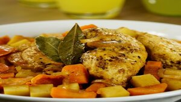

Pollo a la cacerola

Descripción:
Platillo delicioso, rápido y sencillo de preparar. Tiene varias verduras así que es una receta balanceada.
Se puede acompañar con arroz y totopos.
Ingredientes (para 5 personas):
- 10 piezas de pollo
- 2 papas
- 2 zanahorias
- 1/2 cebolla
- 3 tomates
- 4 hojas de laurel
- 6 cucharadas de mantequilla
- 1/2 taza de agua
Procedimiento:
- Partir zanahorias y papas en cuadros medianos
- Partir cebolla y tomates en rajas
- En una olla poner el pollo, verduras, agua y mantequilla
- Con la olla tapada, dejar hervir a fuego medio hasta que el pollo este cocido
- Agregar las hojas de laurel, tapar y volver a dejar hervir por 10 minutos más
- Disfrutar!